Chaque jeu de données a une histoire. Voici comment je l'explore.
Étudiante en Bachelor Intelligence Artificielle à l'ECE Paris. Je transforme des données brutes en tableaux de bord, en modèles et en applications qui servent vraiment.
Disponible pour une alternance dès que possible ou en stage de 5 à 6 mois dès mars 2027
ParcoursDeux stages, deux terrains très différents.
Avant les projets, deux terrains, une équipe agile à distance et la santé publique au Mali.
Développeuse Data & Applications
Skills4Mind, équipe agile de 4 à distance
- Développé une application web avec tableau de bord.
- Fait évoluer la base de données vers un système plus robuste.
- Écrit les requêtes qui calculent les statistiques de l'application.
- Recueilli les besoins de 4 types d'utilisateurs.
- Rédigé les tests et la documentation, en tenant compte du RGPD.
Chargée de Données & Systèmes d'Information
HISP Mali, données de santé publique
- Contrôlé la qualité des données de santé.
- Produit des tableaux de bord sur la vaccination par district.
- Rédigé des documents de cadrage, des plannings et des budgets.
- Accompagné les utilisateurs de la plateforme.
- Animé une formation à l'IA générative.
Sommaire
Vol. 01, projets sélectionnés- Chapitre 01FraudDetectL'enquête sur les paiements frauduleuxIA, machine learning
- Chapitre 02AeroTrackPiloter la production de trois usinesDonnées, BI
- Chapitre 03ETL COVID-19La chaîne automatique des donnéesAutomatisation
- Chapitre 04TreeTechLe laboratoire des six IAIA générative
- Chapitre 05Analyse TMDBCe que racontent des milliers de filmsAnalyse de données
- Hors-sérieJeux, web et designCozy Café, Orris, Loft & Marbre et les autresCréatif
FraudDetectRepérer les fraudes cachées dans des dizaines de milliers de paiements.
Sur 56 962 paiements, 98 fraudes se cachent. Combien le modèle va-t-il en attraper ?
Voir le code sur GitHub →Des paiements par carte bancaire, presque tous normaux. Les fraudes représentent moins de 0,2 % des transactions.
Les chercher à la main, c'est chercher une aiguille dans une botte de foin.
98 fraudes sur 56 962 paiements de testComment attraper un maximum de fraudes sans déclencher de fausses alertes ?
Un modèle qui dit « tout est normal » aurait raison à 99,8 %, et ne servirait à rien. Il faut donc mesurer ce qu'il attrape vraiment.
- Préparation des donnéesSéparation en données d'entraînement et de test
- Entraînement d'un Random ForestUn ensemble d'arbres de décision qui votent
- Vérification sur des paiements jamais vusPour mesurer la fiabilité réelle
- Restitution dans Power BI
Limite : 22 fraudes passent encore entre les mailles. La prochaine étape serait d'ajuster le modèle pour en attraper plus, quitte à accepter quelques fausses alertes.
AeroTrackUn tableau de bord pour piloter trois usines aéronautiques.
Trois usines, trois pièces, et près d'un tiers de la production en retard.
Voir le code sur GitHub →Trois sites, Bordeaux, Tarnos et Gennevilliers, fabriquent trois pièces, des harnais électriques, des nacelles et des aubes de turbine.
Pour les piloter, il faut suivre partout les mêmes indicateurs.
Créer des données de production réalistes, puis un tableau de bord qui calcule tout automatiquement.
pièces produites, sur 500 lignes simulées de 2024 à 2026
de taux de défaut, soit 519 pièces
de temps moyen de fabrication
commandes non livrées, dont 163 en retard
Quantité produite selon le statut de la commande
Pièces produites par trimestre
Pièces produites par site, selon le statut
Limite : les données sont simulées. Le projet montre la démarche et le tableau de bord, pas une vraie usine.
ETL COVID-19Une chaîne automatique, de la source en ligne jusqu'au tableau de bord.
Des données brutes en entrée, un tableau de bord propre en sortie, et une trace de chaque étape.
Voir le code sur GitHub →Les chiffres du COVID-19 sont publiés en ligne sous une forme brute, difficile à lire et à analyser directement.
Automatiser toute la chaîne, en gardant une trace de chaque étape pour retrouver vite une erreur. Le script est planifié pour tourner chaque jour avec le Planificateur de tâches Windows.
pays récupérés à chaque exécution, via l'API disease.sh
indicateurs calculés, taux de mortalité et taux de guérison
pour une exécution complète, d'après le journal
exécution planifiée automatiquement
2026-06-28 17:07:53 [INFO] Début du script ETL 2026-06-28 17:07:55 [INFO] API appelée avec succès 2026-06-28 17:07:55 [INFO] CSV sauvegardé : covid_2026-06-28_17-07-55.csv - 231 lignes
Chaque exécution laisse une trace horodatée. En cas d'erreur d'API, le script l'écrit aussi dans ce fichier.
Limite repérée : 48 pays sur 231 ne publient pas leurs guérisons. Leur taux de guérison sort donc à 0 % et doit être lu avec prudence.
TreeTechSix IA conversationnelles passées au même test.
Six IA, une seule grille d'évaluation, et un temps limité pour les départager.
Voir le code sur GitHub →Il existe de nombreuses IA capables de rédiger et de répondre à des questions, comme ChatGPT. Elles ne se valent pas toutes selon l'usage.
Pendant un hackathon, en équipe et en temps limité, tester plusieurs de ces IA avec une même grille de critères.
Analyse TMDBCe que racontent des milliers de films.
Des milliers de films, trois questions, trois graphiques pour y répondre.
Voir le code sur GitHub →La base TMDB rassemble des milliers de films avec leur date de sortie et leurs notes. Brute, elle ne raconte rien.
Trois questions simples : comment les films sont notés, combien sortent chaque année, et lesquels sont les mieux notés.
Jeux, web et designL'autre côté de mon travail, construire des choses qu'on a envie d'utiliser.
Des jeux, une boutique en ligne et du design, pour montrer l'autre côté de mon travail.
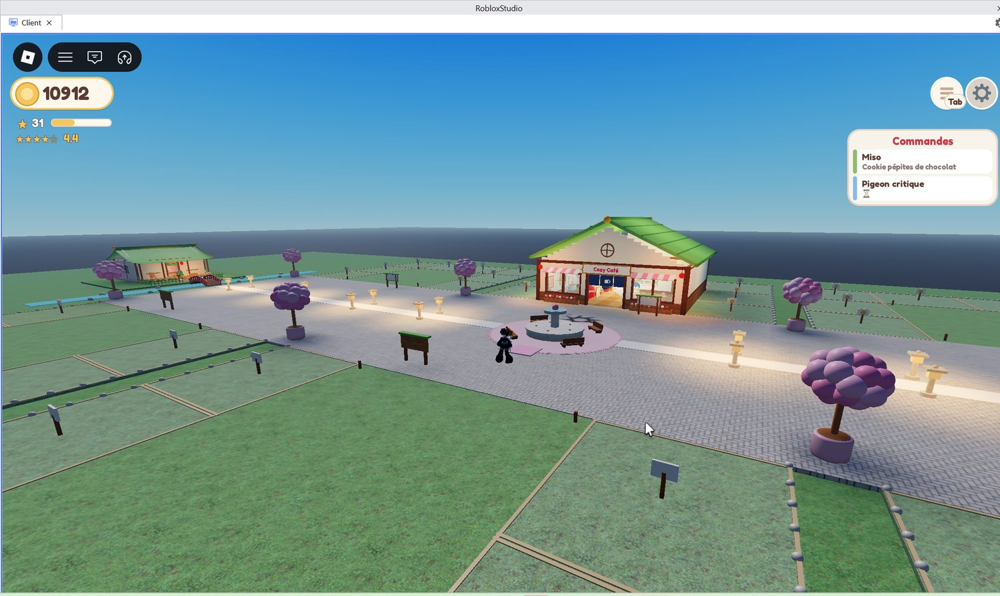
Cozy Café en cours
Un jeu de gestion où chaque joueur tient son café. Clients animaux et leurs commandes, recettes, boutique d'améliorations, employés, niveaux, mode décoration, et des personnages modélisés dans Blender. Pas encore publié.
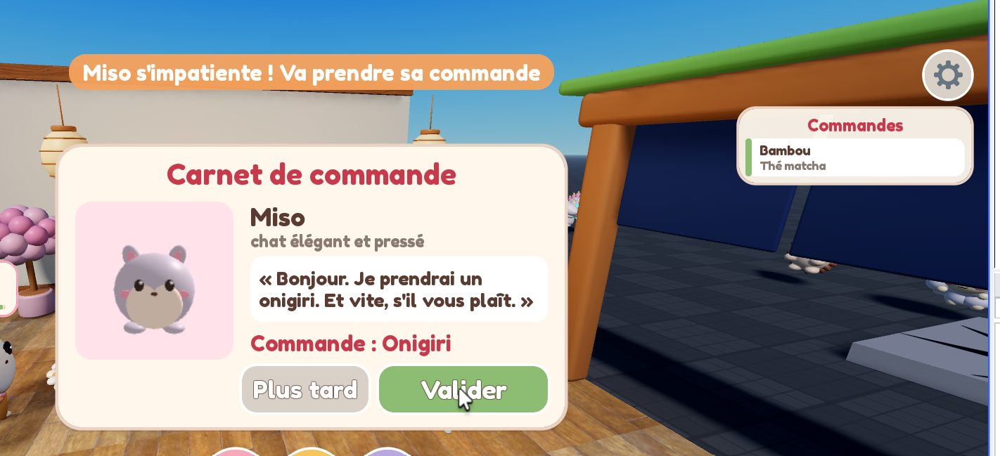
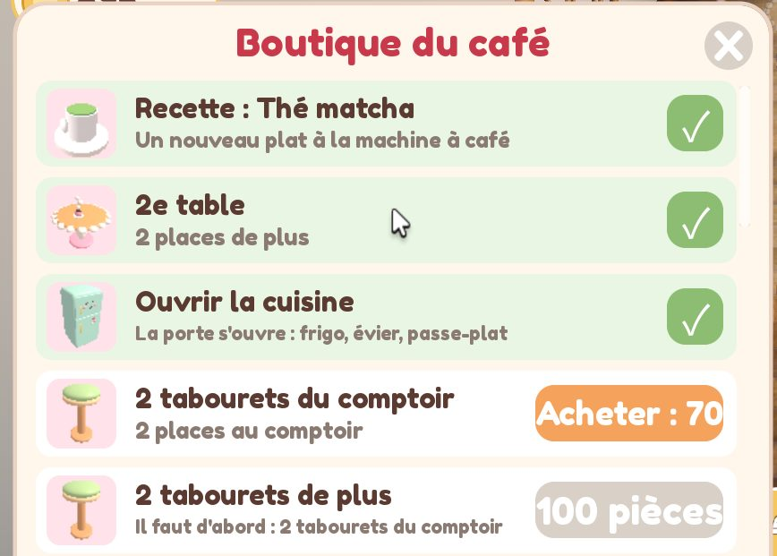
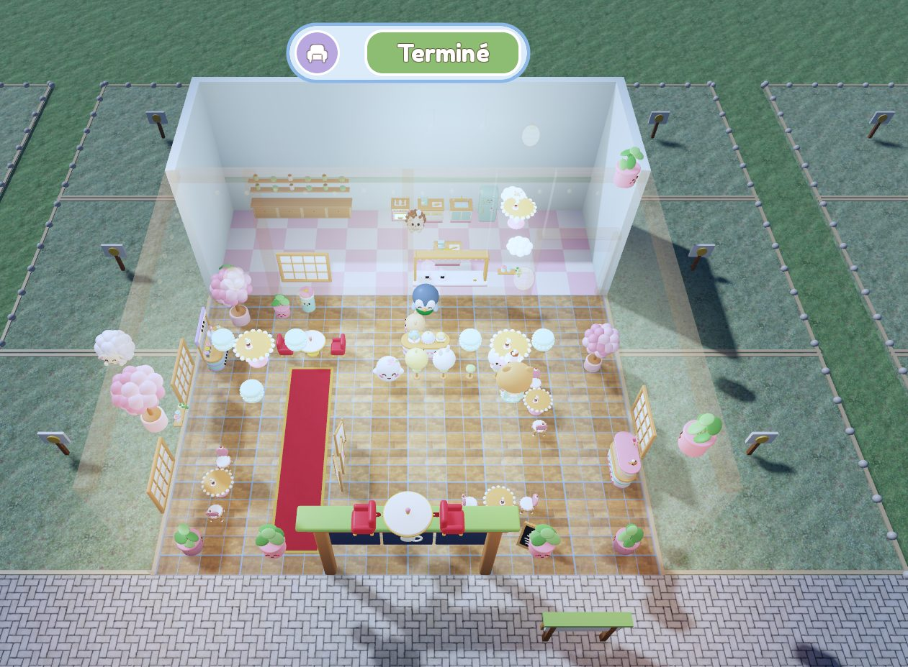
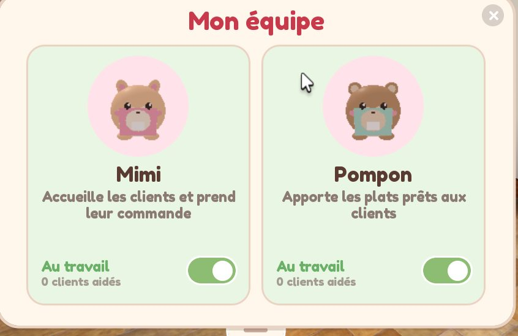
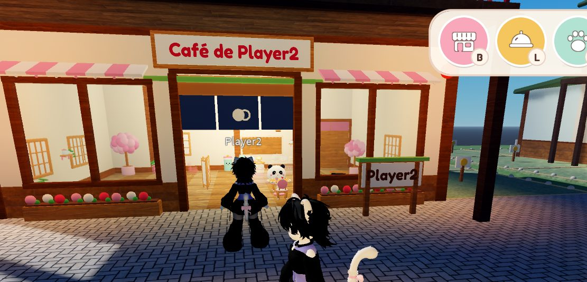
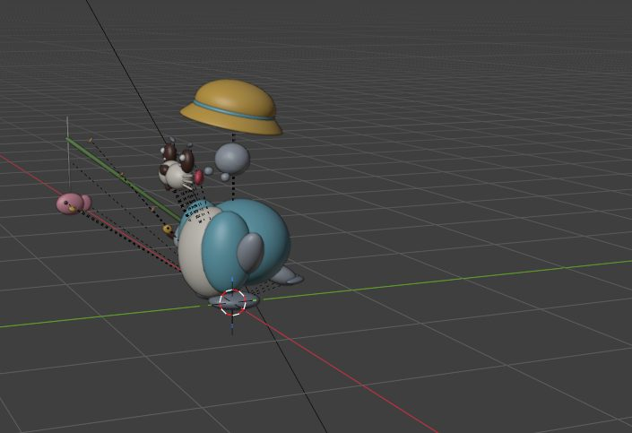
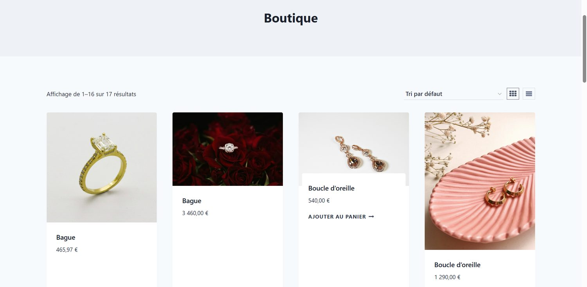
Orris
Boutique en ligne fictive de bijoux, du catalogue jusqu'au paiement par carte en mode test.
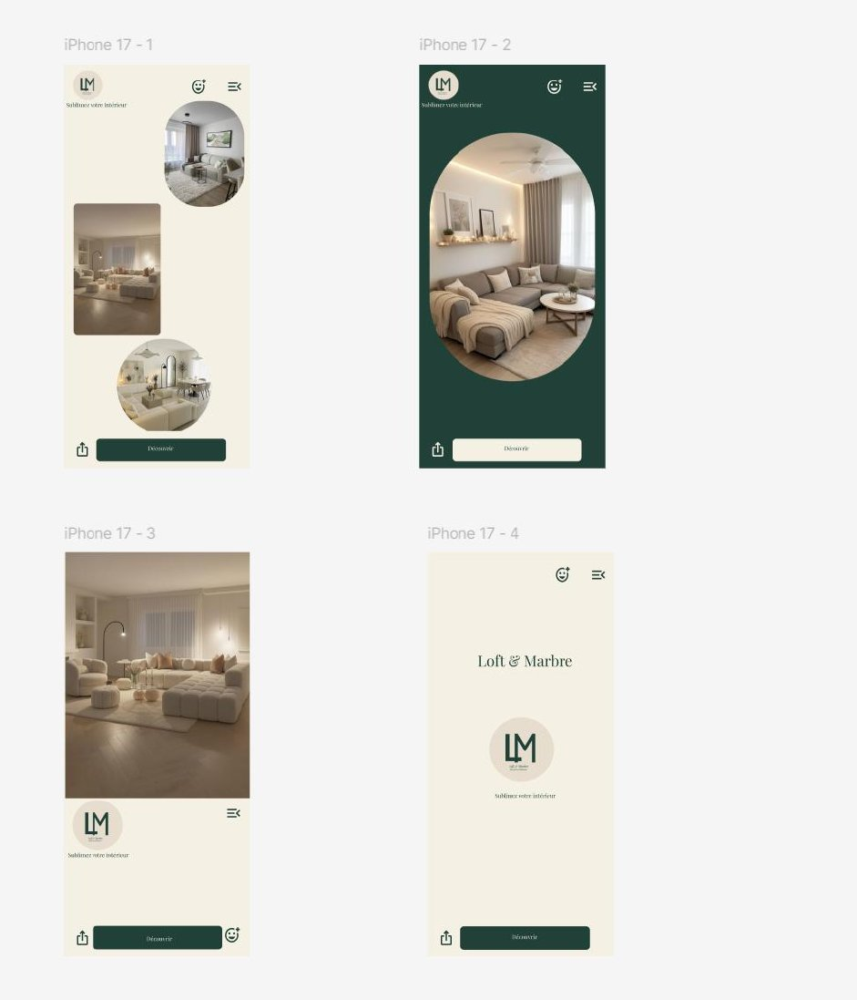
Loft & Marbre
Logo et application mobile pour une agence fictive de décoration. Voir le prototype
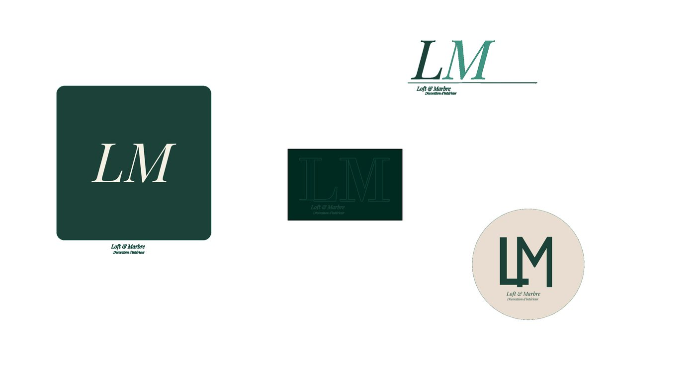
Logo LM
4 variations de forme.
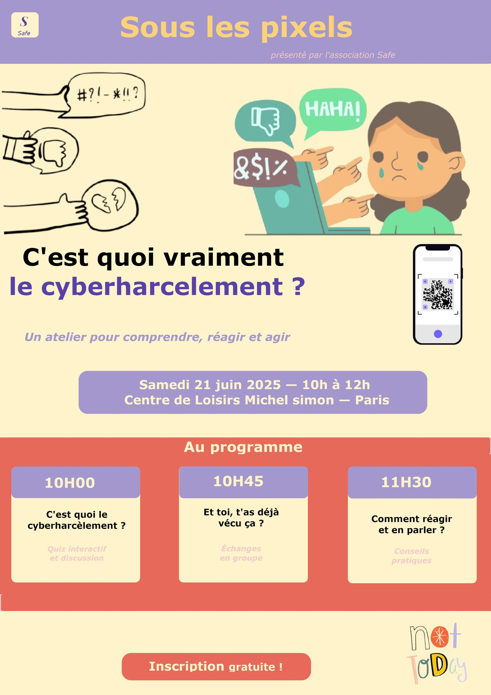
Sous les pixels
Atelier de sensibilisation au cyberharcèlement.
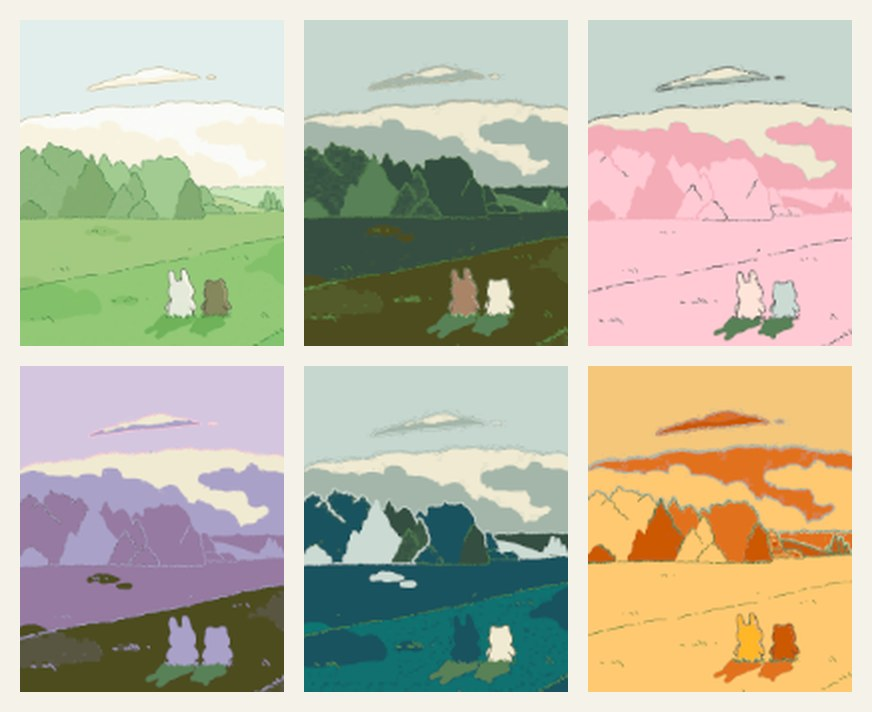
Variations
Un paysage, 6 ambiances.
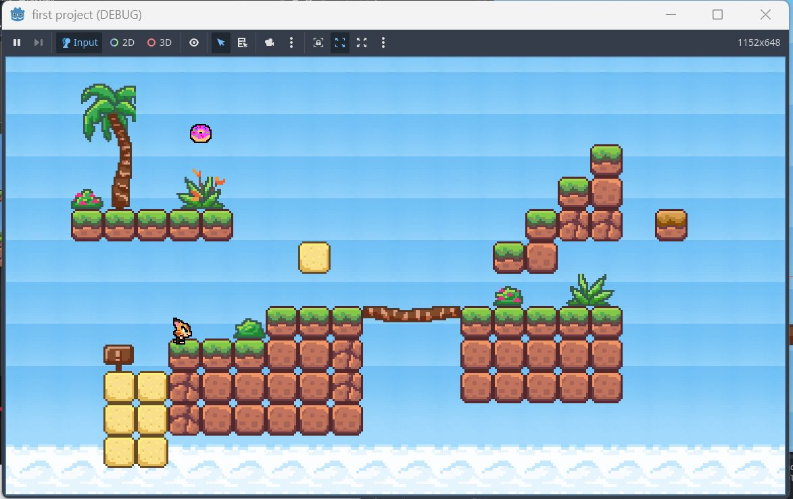
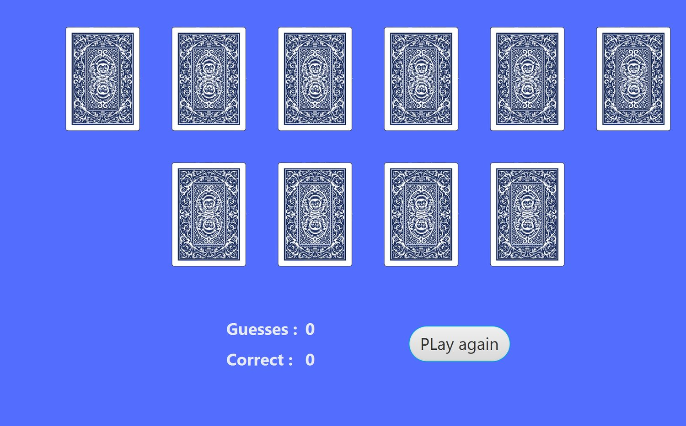
Memory Card
Jeu de mémoire avec cartes animées, comptes joueurs reliés à MySQL et suivi du score en temps réel. Voir le code
Dans les archives
Tout mon GitHub →- Floww, une application mobile de bien-être musical conçue sur Figma, avec un design system de 21 couleurs qui change selon l'humeur. Code
- CandyECE, un Candy Crush en C dans le terminal, en équipe de 3, avec 4 niveaux, obstacles, jokers et sauvegarde des scores. Code
- UniLearn, une plateforme e-learning en PHP et MySQL, avec rôles, cours, quiz, messagerie et forum. Code
- Anime Scraper, un script Python qui récupère titres, notes et genres d'animes sur le web. Code
- Advent of Code, des puzzles d'algorithmique résolus en Python. Code
- Détection de pneumonie en cours, sur des images médicales. Code
- Émotions faciales, une IA qui reconnaît les émotions sur des visages, et Flowly, une application web Django. Code
Compétences et outilsEn rouge, ce que je maîtrise le mieux.
Tout ce que j'utilise, classé honnêtement.
Données et BI
- Python
- SQL
- Power BI
- Pandas
- DAX
- PostgreSQL
- Excel
- Google Sheets
- Power Query (notions)
- DHIS2
IA et machine learning
- Random Forest
- Régression logistique
- PyTorch
- IA générative
- Gemini Pro
- NotebookLM
- RAG (notions)
Développement
- Flask
- Django
- API REST
- Java, JavaFX
- PHP
- C
- MySQL
- WordPress
- Git
- Ligne de commande
Jeux et design
- Roblox Studio, Luau
- Godot
- Blender
- Figma
- GIMP
Formation, Bachelor Intelligence Artificielle, ECE Paris
Bac+3, grade licence, 3e année en cours. Modules clés du programme :
- SQL et administration de bases
- NoSQL
- Exploration des données avec Python
- Datamining
- Statistiques et probabilités
- IA appliquée
- Machine learning avancé
- Deep learning avancé
- Python avancé et librairies IA
- Workflows IA
- Algèbre linéaire
- Web front, back et ReactJS
- Full stack
- Architecture logicielle
- Linux et déploiement IA
- Cloud et réseaux pour l'IA
- Architectures IA distribuées
- Systèmes sécurisés
- Gestion de projet Agile
- Hackathons
- Projet de fin d'études
- IA responsable et RGPD
Cloud
AWS Cloud Practitioner
Amazon Web Services, décembre 2025
Certifications
- AWS Cloud PractitionerAmazon Web Services, décembre 2025
- Intelligence artificielle, examen finalLiora, mars 2026
- Prompt Engineering, niveau 1Liora, décembre 2025
- Programmation, niveau 1Liora, octobre 2025
- No Code TechAway, niveau 1Liora, décembre 2024
- Google Sheets MarketingLiora, novembre 2024
- Google Sheets, No CodeLiora, octobre 2024